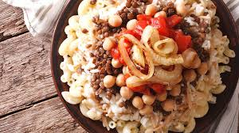
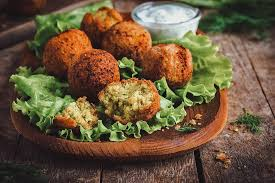

Egyptian cuisine makes heavy use of poultry, legumes, vegetables and fruit from Egypt's rich Nile Valley and Delta. Examples of Egyptian dishes include rice-stuffed vegetables and grape leaves, hummus, falafel, shawarma, kebab and kofta. Others include ful medames, mashed fava beans; koshary, lentils and pasta; and molokhiyya, jute leaf stew. A local type of pita bread known as eish baladi[1] (Egyptian Arabic: عيش بلدى ) is a staple of Egyptian cuisine, and cheesemaking in Egypt dates back to the First Dynasty of Egypt, with Domiati being the most popular type of cheese consumed today. Egyptian cuisine relies heavily on vegetables and legumes, but can also feature meats, most commonly poultry such as squab, chicken, duck and goose.[2] Lamb and beef are commonly used in Egyptian cuisine, particularly for grilling and in a variety of stews and traditional dishes. Goat and camel meat are consumed in certain regions, but they are not as readily available nationwide. Offal is also a popular street food, often served in sandwiches. Fish and seafood are widely consumed across Egypt, with coastal regions such as Alexandria and Port Said being especially known for their seafood cuisine. A significant portion of Egyptian cuisine is vegetarian, largely due to the country's agricultural landscape and historical food traditions. The fertile banks of the Nile River are primarily used for cultivating crops rather than animal grazing, as arable land is limited and livestock farming requires extensive resources such as land, water and fodder. Additionally, the dietary practices of Egypt’s Coptic Christians, who observe religious restrictions that mandate an essentially vegan diet for extended periods of the year, further contribute to the prominence of plant-based dishes in Egyptian cuisine. Tea is the national drink of Egypt, and beer is the most popular alcoholic beverage. While Islam is the majority faith in Egypt and observant Muslims tend to avoid alcohol, alcoholic drinks are still readily available in the country. Popular desserts in Egypt include baqlawa, basbousa, and kunafa. Common ingredients in desserts include dates, honey, and almonds.

